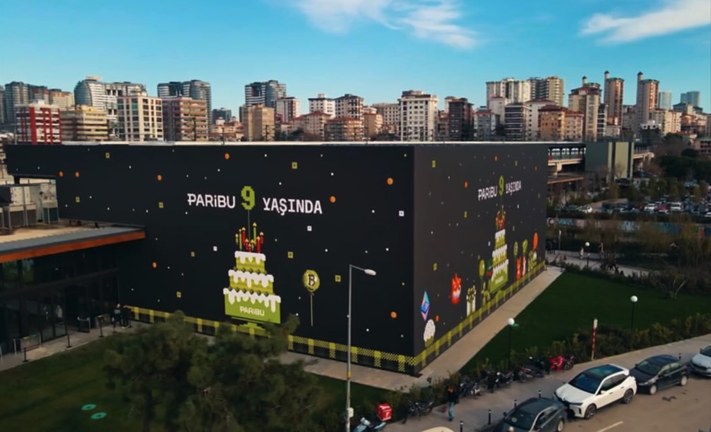

Niyetler 2 / Intentions 2 sergisi için İstiklal’de hareketli mekân grafikleri.
Motion graphics for the Intentions 2 exhibition on İstiklal.

Paribu’nun 9. yılı için interaktif ekran deneyimi.
An interactive screen experience for Paribu’s 9th anniversary.
Artbox için dijital sanat içeriği.
Digital art content for Artbox.
Koç Topluluğu’nun 100. yılı için sergi medyası.
Exhibition media for the Koç Group centennial.
Mağaza vitrini için hareketli görüntüler.
Moving imagery for the store window.
Borusan Sanat için görsel içerik üretimi.
Visual content production for Borusan Sanat.
Borusan Contemporary için görsel içerik üretimi.
Visual content production for Borusan Contemporary.
Edward Burtynsky sergisi için medya tasarımı.
Media design for the Edward Burtynsky exhibition.
Temsil ve Hafıza sergisi için mekânsal medya.
Spatial media for the Temsil ve Hafıza exhibition.